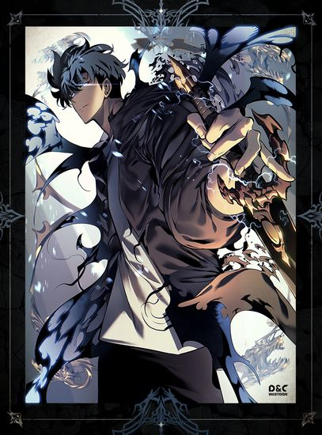

Поднятие уровня в одиночку[Закончен]

10 лет назад, после того, как открылись «Врата», соединившие реальный мир с параллельным, некоторые из людей получили силу охотиться на монстров внутри «Врат». Они известны как «Охотники». Однако не все Охотники сильные. Меня зовут Сун Джин-Ву, охотник E-ранга. Я тот, кто рискует своей жизнью в самых низких уровнях подземелья. Не имея никаких сверхсильных навыков, я едва зарабатывал необходимые деньги, сражаясь в низкоуровневых подземельях... по крайней мере, пока я не нашел скрытое подземелье с самыми трудными проблемами в подземельях D-ранга! В конце концов, когда я чуть не умер, я внезапно получил странную силу, журнал квестов, который мог видеть только я, секрет для поднятия уровня, о котором знаю только я! Если я тренировался в соответствии с моими квестами и охотился на монстров, то мой уровень повышался. Переход от самого слабого Охотника к самому сильному, Охотнику S-ранга!
Главы